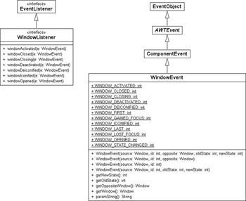
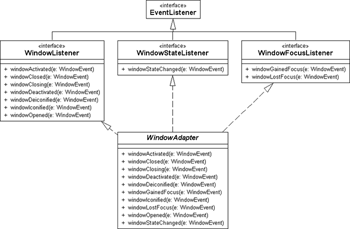

14.5 Es tut sich was – Ereignisse beim AWT
Beim Arbeiten mit grafischen Oberflächen interagiert der Benutzer mit Komponenten. Er bewegt die Maus im Fenster, klickt eine Schaltfläche an oder verschiebt einen Rollbalken. Das grafische System beobachtet die Aktionen des Benutzers und informiert die Applikation über die anfallenden Ereignisse. Dann kann das laufende Programm entsprechend reagieren.
14.5.1 Die Ereignisquellen und Horcher (Listener) von Swing
Im Ereignismodell von Java gibt es eine Reihe von Ereignisauslösern (Ereignisquellen, engl. event sources), wie zum Beispiel Schaltflächen oder Schieberegler. Die Ereignisse können vom Benutzer der grafischen Oberfläche kommen, etwa wenn er eine Schaltfläche anklickt, aber auch auf eigene Auslöser zurückzuführen sein, zum Beispiel wenn im Hintergrund eine Tabelle geladen wird.
Neben den Ereignisauslösern gibt es eine Reihe von Interessenten (Listener oder Horcher genannt), die gern informiert werden wollen, wenn ein Ereignis aufgetreten ist. Da der Interessent in der Regel nicht an allen ausgelösten Oberflächen-Ereignissen interessiert ist, sagt er einfach, welche Ereignisse er empfangen möchte. Dies funktioniert so, dass er sich bei einer Ereignisquelle anmeldet, und diese informiert ihn, wenn sie ein Ereignis aussendet. Auf diese Weise leidet die Systemeffizienz nicht, da nur diejenigen informiert werden, die auch Verwendung für das Ereignis haben. Für jedes Ereignis gibt es einen eigenen Listener, an den das Ereignis weitergeleitet wird – darum der Name für das Modell: Delegation Model.[197](Die Entwickler hatten vorher den Namen »Command Model« vergeben, doch drückte dies die Arbeitsweise nicht richtig aus.) Die folgende Tabelle gibt eine Übersicht über einige Listener und zeigt, was für Ereignisse sie melden.
Dem Listener übergibt das Swing-Grafiksystem jeweils ein Ereignis-Objekt, etwa dem ActionListener ein ActionEvent-Objekt, dem WindowListener ein WindowEvent-Objekt usw. Die Einzigen, die etwas aus der Reihe tanzen, sind MouseListener und MouseMotionListener, denn beide melden MouseEvent-Objekte.
Schritte zum richtigen Horchen
Damit die Quelle Ereignisse sendet und der Client darauf reagiert, sind zwei Schritte durchzuführen:
- Implementieren des Listeners
- Anmelden des Listeners
Um dieses Konzept kennenzulernen, wollen wir einen Fenster-Horcher programmieren, der registriert, ob ein Fenster geschlossen werden soll. Wenn ja, bietet er einen Dialog; bestätigt der Benutzer den Dialog, wird die Applikation beendet.
14.5.2 Listener implementieren
Der Listener selbst ist eine Schnittstelle, die von den Interessenten implementiert wird. Da die Ereignis-Schnittstelle Callback-Methoden vorschreibt, muss der Interessent diese Operation implementieren. Wird im nächsten Schritt ein Horcher mit dem Ereignisauslöser verbunden, kann die Ereignisquelle davon ausgehen, dass der Horcher die entsprechende Methode besitzt. Diese ruft die Ereignisquelle bei einem Ereignis später auf.
Die Schnittstelle WindowListener
Alle Meldungen rund um Fenster werden über einen WindowListener abgewickelt. Implementierungen können so etwa erfahren, ob das Fenster vergrößert oder verkleinert wurde. Die Schnittstelle deklariert folgende Operationen:
interface java.awt.event.WindowListener |
- void windowOpened(WindowEvent e)
Wird aufgerufen, wenn das Fenster geöffnet wurde. - void windowClosing(WindowEvent e)
Wird aufgerufen, wenn das Fenster geschlossen wird. - void windowClosed(WindowEvent e)
Wird aufgerufen, wenn das Fenster mit dispose() geschlossen wurde. - void windowIconified(WindowEvent e)
Wird aufgerufen, wenn das Fenster zum Icon verkleinert wird. - void windowDeiconified(WindowEvent e)
Wird aufgerufen, wenn das Fenster wieder hochgeholt wird. - void windowActivated(WindowEvent e)
Wird aufgerufen, wenn das Fenster aktiviert wird. - void windowDeactivated(WindowEvent e)
Wird aufgerufen, wenn das Fenster deaktiviert wird.
Der nächste Schritt ist es, die Schnittstelle zu implementieren und in windowClosing() Programmcode einzubetten, der den Benutzer fragt, ob die Anwendung wirklich geschlossen werden soll.
Abbildung 14.19: UML-Diagramm von WindowListener
Wer implementiert die Schnittstelle WindowListener?
Bei der Implementierung der Schnittstelle WindowListener gibt es unterschiedliche Varianten:
- Eine Klasse, die zum Beispiel JFrame erweitert, implementiert gleichzeitig WindowListener.
- Eine externe Klasse implementiert die Listener-Schnittstelle.
- Eine innere anonyme Klasse implementiert den Listener.
Die Lösungen haben Vor- und Nachteile. Wenn die eigene Klasse den Listener implementiert, ist das Programm schön kurz und der Listener hat einfachen Zugriff auf alle Zustände oder Variablen. Den Listener von einer anderen Klasse implementieren zu lassen hat dagegen den Vorteil, dass die Implementierung wiederverwendbar ist. Das ist bei einem allgemeinen Horcher für Fenterschließereignisse sicherlich angebracht.
Fenster-Schließ-Horcher
Die Implementierung fragt mit JOptionPane.showConfirmDialog(), ob das Fenster wirklich geschlossen werden soll. Die nicht genutzten Callback-Methoden implementieren wir leer.
Listing 14.3: com/tutego/insel/ui/event/DialogWindowClosingListener.java
package com.tutego.insel.ui.event;
import java.awt.event.*;
import javax.swing.JOptionPane;
public class DialogWindowClosingListener implements WindowListener
{
@Override public void windowClosing( WindowEvent event )
{
int option = JOptionPane.showConfirmDialog( null, "Applikation beenden?" );
if ( option == JOptionPane.OK_OPTION )
System.exit( 0 );
}
@Override public void windowClosed( WindowEvent event ) { /*Empty*/ }
@Override public void windowDeiconified( WindowEvent event ) { /*Empty*/ }
@Override public void windowIconified( WindowEvent event ) { /*Empty*/ }
@Override public void windowActivated( WindowEvent event ) { /*Empty*/ }
@Override public void windowDeactivated( WindowEvent event ) { /*Empty*/ }
@Override public void windowOpened( WindowEvent event ) { /*Empty*/ }
}
An diesem Beispiel ist abzulesen, dass jeder, der ein WindowListener sein möchte, die vorgeschriebenen Methoden implementieren muss. Damit zeigt er Interesse an dem WindowEvent. Bis auf windowClosing() haben wir die anderen Operationen nicht implementiert, da sie uns nicht interessieren. Die Implementierung ist so, dass die Anwendung beendet wird, wenn der Anwender auf das × klickt und den Dialog mit OK bestätigt.
14.5.3 Listener bei dem Ereignisauslöser anmelden/abmelden
Hat der Listener die Schnittstelle implementiert, wird er mit dem Ereignisauslöser verbunden. Dafür gibt es eine Reihe von Hinzufügen- und Entfernen-Methoden, die einer Namenskonvention folgen.
- addEreignisListener( EreignisListener )
- removeEreignisListener( EreignisListener )
Üblicherweise lassen sich beliebig viele Listener an einen Ereignisauslöser hängen.
addXXXListener() nur dann möglich, wenn es auch Ereignisse gibt
Nicht jede Komponente kann jedes Ereignis auslösen. Daher gibt es nur addXXXListener() für Ereignisse, die die Komponenten tatsächlich auslösen, und unterschiedliche Komponenten bieten unterschiedliche Hinzufügemethoden. Die JFrame-Klasse bietet zum Beispiel addWindowListener() für Fensterereignisse, aber kein addActionListener() – das wiederum hat bietet JButton, damit er die Aktivierung der Schaltfläche melden kann. Eine Schaltfläche löst eben keine Fenster-Ereignisse aus, und daher gibt es die Methode addWindowListener() bei Schaltflächen nicht. So lassen sich über die angebotenen addXXXListener()-Methoden gut die Ereignisse ablesen, die eine Komponente auslösen kann, denn das XXX wird dann nach der Namenskonvention der Ereignis-Typ sein.
Fensterschließer registrieren
Den Listener für Fenster-Ereignisse, unseren DialogWindowClosingListener, binden wir mit der Methode addWindowListener() an ein Fenster. Wird genau dieses Fenster geschlossen, bekommen wir das mit und können reagieren.
Listing 14.4: com/tutego/insel/ui/event/CloseWithDialogFrame.java
package com.tutego.insel.ui.event;
import javax.swing.*;
public class CloseWithDialogFrame
{
public static void main( String[] args )
{
JFrame f = new JFrame();
f.setDefaultCloseOperation( JFrame.DO_NOTHING_ON_CLOSE );
f.add( new JLabel( "Zyklone bringen Regen" ) );
f.pack();
f.addWindowListener( new DialogWindowClosingListener() );
f.setVisible( true );
}
}
Wir tragen mit addWindowListener() den Listener ein. Immer wenn ein Window-Event ausgelöst wird, kümmert sich die jeweilige Methode um dessen Abarbeitung.
Normalerweise schließt Swing ein JFrame automatisch, wenn das × gedrückt wird – anders als beim AWT-Frame. Die Anweisung setDefaultCloseOperation(JFrame.DO_NOTHING_ ON_CLOSE) verändert dieses Standardverhalten, damit nichts passiert und wir selbst zu 100 % die Kontrolle behalten. Denn ist die Zeile nicht im Programm, so merkt Swing, dass das × gedrückt wurde, und versteckt das Fenster, egal was der Benutzer im Dialog angibt.
setDefaultCloseOperation() und der WindowListener *
Die ersten Swing-Programme, die wir geschrieben haben, nutzen setDefaultCloseOperation(JFrame.EXIT_ON_CLOSE), damit Swing automatisch die Anwendung beendet, wenn der Anwender auf × klickt. Diese Belegung ist für kleine Testprogramme in Ordnung, in ausgewachsenen GUI-Anwendungen sollte sich die Applikation jedoch nicht einfach schließen, sondern mit einem Dialog über das Ende informieren. Die Voreinstellung für die default-Close-Operation von JFrame ist HIDE_ON_CLOSE, was das Fenster automatisch verdeckt (das Fenster kann später wieder aktiviert werden), nachdem die WindowListener aufgerufen wurden. Eine weitere Konstante ist DISPOSE_ON_CLOSE, was ebenfalls die Listener abarbeitet, aber das Fenster automatisch schließt und alle Ressourcen freigibt. Übernehmen wir selbst die komplette Kontrolle, ist die Belegung mit JFrame.DO_NOTHING_ ON_CLOSE angebracht.
Der Unterschied zwischen windowClosing() und windowClosed() *
Die Schnittstelle WindowListener schreibt zwei Methoden vor, deren Namen sich ziemlich ähnlich anhören: windowClosing() und windowClosed(). Betrachten wir den Unterschied zwischen beiden und sehen wir uns an, wie ein Programm beide Methoden nutzen oder meiden kann.
In den einfachen Programmen setzen wir in die windowClosing()-Methode einen Aufruf von System.exit(), um die Applikation zu beenden, da windowClosing() immer bei Beendigung der Applikation mit dem × am Fenster aufgerufen wird. Was allerdings leicht vergessen wird, ist die Tatsache, dass nicht nur der Benutzer über das × das Fenster schließen kann, sondern auch die Applikation über die spezielle Methode dispose(). Sie gibt alle Ressourcen frei und schließt das Fenster. Die Applikation ist dann allerdings noch nicht beendet. Damit wir das Schließen mit dem × und durch dispose() unterscheiden können, kümmert sich windowClosing() um das × und windowClosed() um das dispose(). Wenn wir lediglich mit dem × das Fenster schließen und die Applikation beendet werden soll, muss nicht noch extra dispose() schön brav die Ressourcen freigeben. Daher reicht oft ein System.exit(). Soll das Fenster jedoch mit × und dispose() einfach nur geschlossen werden oder ist eine gemeinsame Behandlung gewünscht, so ist es sinnvoll, in windowClosing() mit dispose() indirekt windowClosed() aufzurufen, etwa so:
public void windowClosing( WindowEvent e )
{
event.getWindow().dispose();
}
public void windowClosed( WindowEvent e )
{
// Das Fenster ist geschlossen, und jetzt können wir hier
// weitermachen, etwa mit System.exit(), wenn alles
// vorbei sein soll.
}
14.5.4 Adapterklassen nutzen
Hat eine Schnittstelle wie WindowListener viele Methoden, so hat eine Implementierung alle Methoden zu realisieren, auch wenn die Mehrzahl einen leeren Rumpf hat. Das ist lästig. Hier helfen Adapterklassen – Klassen, die die Schnittstellen mit leeren Rümpfen implementieren. Hat beispielsweise die Schnittstelle WindowListener sieben Methoden, so steht in der Adapterklasse folgende Implementierung:
Listing 14.5: java.awt.event.WindowAdapter
public abstract class WindowAdapter
implements WindowListener, WindowStateListener, WindowFocusListener
{
public void windowOpened( WindowEvent e ) { }
public void windowClosing( WindowEvent e ) { }
public void windowClosed( WindowEvent e ) { }
public void windowIconified( WindowEvent e ) { }
public void windowDeiconified( WindowEvent e ) { }
public void windowActivated( WindowEvent e ) { }
public void windowDeactivated( WindowEvent e ) { }
public void windowStateChanged( WindowEvent e ) { }
public void windowGainedFocus( WindowEvent e ) { }
public void windowLostFocus( WindowEvent e ) { }
}
Zusätzlich entdecken wir einige Methoden, die nicht direkt von unserem WindowListener stammen, sondern von zwei weiteren Schnittstellen, die jetzt keine Rolle spielen.
Abbildung 14.20: UML-Diagramm von WindowAdapter
Wenn wir jetzt einen Ereignisbehandler implementieren müssen, erweitern wir einfach die Adapterklasse und überschreiben nur die relevanten Methoden. Der Listener zum Schließen des Fensters mit einer Adapterklasse sieht dann wie folgt aus:
Listing 14.6: com/tutego/insel/ui/event/DialogWindowClosingListener2.java
package com.tutego.insel.ui.event;
import java.awt.event.*;
import javax.swing.JOptionPane;
public class DialogWindowClosingListener2 extends WindowAdapter
{
@Override public void windowClosing( WindowEvent event )
{
int option = JOptionPane.showConfirmDialog( null, "Applikation beenden?" );
if ( option == JOptionPane.OK_OPTION )
System.exit( 0 );
}
}
Beim Client ändert sich nichts viel, es ist immer noch die addWindowListener()-Methode:
Listing 14.7: com/tutego/insel/ui/event/CloseWithDialogFrame.java, main()
JFrame f = new JFrame();
f.setDefaultCloseOperation( JFrame.DO_NOTHING_ON_CLOSE );
f.add( new JLabel( "Zyklone bringen Regen" ) );
f.pack();
f.addWindowListener( new DialogWindowClosingListener2() );
f.setVisible( true );
14.5.5 Innere Mitgliedsklassen und innere anonyme Klassen
Wir haben für das Fensterschließ-Beispiel eine externe Klasse benutzt, weil die Klasse für unterschiedliche Swing-Programme nützlich ist. Ist der Listener sehr individuell und mit der Komponente verbunden, so sind innere anonyme Klassen nützlich. Dazu zwei Beispiele.
Auf Klicks reagieren
Das JLabel kann Maus-Ereignisse empfangen, was wir nutzen wollen, um bei einem Doppelklick die Applikation zu beenden:
Listing 14.8: com/tutego/insel/ui/event/ClickOnJLabelToClose, java, main()
JFrame frame = new JFrame();
frame.setDefaultCloseOperation( JFrame.EXIT_ON_CLOSE );
JLabel label = new JLabel( "Lebe immer First-Class, sonst tun es deine Erben!" );
label.setForeground( Color.BLUE );
frame.add( label );
label.addMouseListener( new MouseAdapter() {
@Override public void mouseClicked( MouseEvent e ) {
if ( e.getClickCount() > 1 )
System.exit( 0 );
}
} );
frame.pack();
frame.setVisible( true );
Die Lösung hat den Vorteil, dass nicht extra eine eigene Klasse mit einem häufig überflüssigen Namen angelegt wird. Die Unterklasse von MouseAdapter ist nur hier sinnvoll und wird nur in diesem Kontext benötigt.
Mini-Multiplikationsrechner
Innere Klassen sind elegant, denn sie können leicht auf Zustände der äußeren Klasse zugreifen. Das folgende Programm realisiert einen Hexadezimalwandler.
Listing 14.9: com/tutego/insel/ui/event/Hexconverter.java
package com.tutego.insel.ui.event;
import java.awt.FlowLayout;
import java.awt.event.*;
import javax.swing.*;
public class Hexconverter
{
public static void main( String[] args )
{
JFrame frame = new JFrame();
frame.setDefaultCloseOperation( JFrame.EXIT_ON_CLOSE );
frame.setLayout( new FlowLayout() );
final JTextField decTextField = new JTextField();
decTextField.setColumns( 5 );
frame.add( decTextField );
frame.add( new JLabel(" ist hexadezimal " ) );
final JTextField hexTextField = new JTextField();
hexTextField.setColumns( 5 );
frame.add( hexTextField );
JButton okButton = new JButton( "Konvertiere" );
frame.add( okButton );
okButton.addActionListener( new ActionListener() {
@Override public void actionPerformed( ActionEvent e ) {
int dec = Integer.parseInt( decTextField.getText() );
String hex = Integer.toHexString( dec );
hexTextField.setText( hex );
}
} );
frame.pack();
frame.setVisible( true );
}
}
Das Programm nutzt einige Dinge, die neu sind, aber gut verständlich: Damit mehrere Komponenten nebeneinander gesetzt werden, konfigurieren wir das Fenster mit einem FlowLayout. Dann platzieren wir ein Textfeld, eine Beschriftung, ein Textfeld und eine Schaltfläche nebeneinander. An die Schaltfläche kommt ein Listener, damit wir mitbekommen, ob sie bestätigt wurde. Wenn sie bestätigt wurde, erfolgt die Konvertierung (Fehler werden nicht abgefangen). Die anonyme Klasse kann dabei sehr gut auf die beiden Textfelder zurückgreifen. Wäre der Listener eine externe Klasse, so müssten ihr – etwa im Konstruktor – die beiden Textfelder mitgegeben werden.
14.5.6 Aufrufen der Listener im AWT-Event-Thread
Nachdem der Listener implementiert und angemeldet wurde, ist das System im Fall eines aufkommenden Ereignisses bereit, es zu verteilen. Aktiviert zum Beispiel der Benutzer eine Schaltfläche, so führt der AWT-Event-Thread – auch Event-Dispatching-Thread genannt – den Programmcode im Listener selbstständig aus. Sehr wichtig ist Folgendes: Der Programmcode im Listener sollte nicht zu lange laufen, da sich sonst Ereignisse in der Queue sammeln, die der AWT-Thread nicht mehr verarbeiten kann. Diese Eigenschaft fällt dann schnell auf, wenn sich Aufforderungen zum Neuzeigen (Repaint-Ereignisse) aufstauen, da auf diese Weise leicht ein »stehendes System« entsteht.
Die Reihenfolge, in der die Listener abgearbeitet werden, ist im Prinzip undefiniert. Zwar reiht das JDK sie in eine Liste ein, sodass es dadurch eine Reihenfolge gibt, doch sollte diesem Implementierungsdetail keine Beachtung geschenkt werden.
Ihr Kommentar
Wie hat Ihnen das <openbook> gefallen? Wir freuen uns immer über Ihre freundlichen und kritischen Rückmeldungen.
 Jetzt bestellen
Jetzt bestellen


{kind=link}
{kind=link}